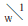

破片ノ景色――
△ハ俺ノ AMOUREUSE デアル
李箱
俺は仕方ナク泣イタ
電燈ガ煙草ヲフカシタ
▽ハデアル
×
▽ヨ！ 俺ハ苦シイ
俺ハ遊ブ
▽ノすりつぱーハ菓子ト同ジデナイ
如何ニ俺ハ泣ケバヨイノカ
×
淋シイ野原ヲ懐ヒ
淋シイ雪ノ日ヲ懐ヒ
俺ノ皮膚ヲ思ハナイ
記憶ニ対シテ俺ハ剛体デアル
ホントウニ
「一緒に歌ひなさいませ」
ト云ツテ俺ノ膝ヲ叩イタ筈ノコトニ対シテ
▽ハ俺ノ夢デアル
すてつき！ 君ハ淋シク有名デアル
ドウシヤゥ
×
遂ニ▽ヲ埋葬シタ雪景デアツタ。
１９３１・６・５
底本：「李箱作品集成」作品社
2006（平成18）年9月15日第1刷発行
底本の親本：「朝鮮と建築 第十集第七号」朝鮮建築会
1931（昭和6）年7月
初出：「朝鮮と建築 第十集第七号」朝鮮建築会
1931（昭和6）年7月
※底本の編者による語注は省略しました。
入力：坂本真一
校正：Juki
2020年3月28日作成
青空文庫作成ファイル：
このファイルは、インターネットの図書館、青空文庫（https://www.aozora.gr.jp/）で作られました。入力、校正、制作にあたったのは、ボランティアの皆さんです。
●表記について
- このファイルは W3C 勧告 XHTML1.1 にそった形式で作成されています。